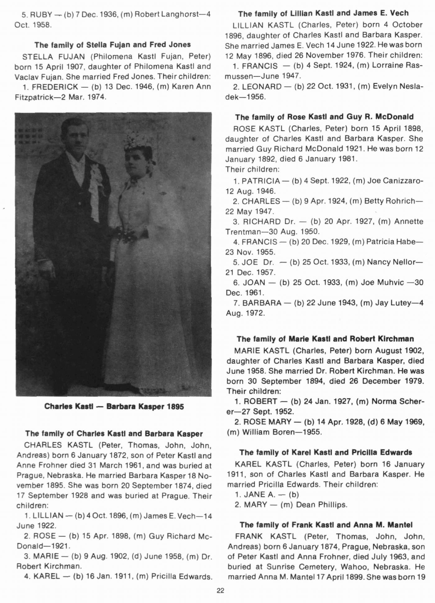

The book · The Family of Peter Kastl
Page 22 The family of Stella Fujan and Fred Jones


Transcription
- RUBY — (b) 7 Dec. 1936, (m) Robert Langhorst—4 Oct. 1958.
The family of Stella Fujan and Fred Jones
STELLA FUJAN (Philomena Kastl Fujan, Peter) born 15 April 1907, daughter of Philomena Kastl and Vaclav Fujan. She married Fred Jones. Their children:
- FREDERICK — (b) 13 Dec. 1946, (m) Karen Ann Fitzpatrick—2 Mar. 1974.

The family of Charles Kastl and Barbara Kasper
CHARLES KASTL (Peter, Thomas, John, John, Andreas) born 6 January 1872, son of Peter Kastl and Anne Frohner died 31 March 1961, and was buried at Prague, Nebraska. He married Barbara Kasper 18 November 1895. She was born 20 September 1874, died 17 September 1928 and was buried at Prague. Their children:
- LILLIAN — (b) 4 Oct. 1896, (m) James E. Vech—14 June 1922.
- ROSE — (b) 15 Apr. 1898, (m) Guy Richard McDonald—1921.
- MARIE — (b) 9 Aug. 1902, (d) June 1958, (m) Dr. Robert Kirchman.
- KAREL — (b) 16 Jan. 1911, (m) Pricilla Edwards.
The family of Lillian Kastl and James E. Vech
LILLIAN KASTL (Charles, Peter) born 4 October 1896, daughter of Charles Kastl and Barbara Kasper. She married James E. Vech 14 June 1922. He was born 12 May 1896, died 26 November 1976. Their children:
- FRANCIS — (b) 4 Sept. 1924, (m) Lorraine Rasmussen—June 1947.
- LEONARD — (b) 22 Oct. 1931, (m) Evelyn Nesladek—1956.
The family of Rose Kastl and Guy R. McDonald
ROSE KASTL (Charles, Peter) born 15 April 1898, daughter of Charles Kastl and Barbara Kasper. She married Guy Richard McDonald 1921. He was born 12 January 1892, died 6 January 1981. Their children:
- PATRICIA — (b) 4 Sept. 1922, (m) Joe Canizzaro-12 Aug. 1946.
- CHARLES — (b) 9 Apr. 1924, (m) Betty Rohrich—22 May 1947.
- RICHARD Dr. — (b) 20 Apr. 1927, (m) Annette Trentman—30 Aug. 1950.
- FRANCIS — (b) 20 Dec. 1929, (m) Patricia Habe—23 Nov. 1955.
- JOE Dr. — (b) 25 Oct. 1933, (m) Nancy Nellor—21 Dec. 1957.
- JOAN — (b) 25 Oct. 1933, (m) Joe Muhvic —30 Dec. 1961.
- BARBARA — (b) 22 June 1943, (m) Jay Lutey—4 Aug. 1972.
The family of Marie Kastl and Robert Kirchman
MARIE KASTL (Charles, Peter) born August 1902, daughter of Charles Kastl and Barbara Kasper, died June 1958. She married Dr. Robert Kirchman. He was born 30 September 1894, died 26 December 1979. Their children:
- ROBERT — (b) 24 Jan. 1927, (m) Norma Scherer—27 Sept. 1952.
- ROSE MARY — (b) 14 Apr. 1928, (d) 6 May 1969, (m) William Boren—1955.
The family of Karel Kastl and Pricilla Edwards
KAREL KASTL (Charles, Peter) born 16 January 1911, son of Charles Kastl and Barbara Kasper. He married Pricilla Edwards. Their children:
- JANE A. — (b)
- MARY — (m) Dean Phillips.
The family of Frank Kastl and Anna M. Mantel
FRANK KASTL (Peter, Thomas, John, John, Andreas) born 6 January 1874, Prague, Nebraska, son of Peter Kastl and Anna Frohner, died July 1963, and buried at Sunrise Cemetery, Wahoo, Nebraska. He married Anna M. Mantel 17 April 1899. She was born 19
Transcriber’s notes
Item '5. RUBY' at top-left continues the child list of Helen Fujan and Emil Svec from the previous page. Charles Kastl's mother printed as 'Anne Frohner' (elsewhere 'Anna Frohner'). Richard and Joe McDonald have 'Dr.' after the name as printed. Joe and Joan McDonald share birth date 25 Oct. 1933 as printed. Marie Kastl born 'August 1902' in her entry vs '9 Aug. 1902' in parent's list. Frank Kastl/Anna M. Mantel entry continues on next page mid-sentence ('She was born 19').